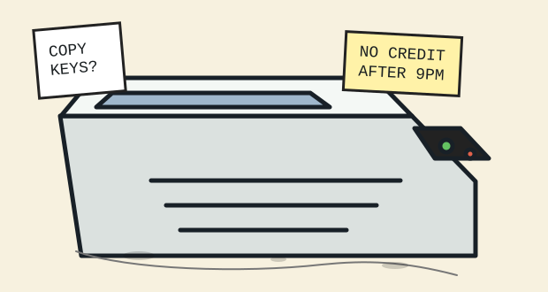

foreversite / copyshop drawer
R. Bell Copy & Enlargement, open after the streetlights
Concrete services: black-and-white copies, legal-size enlargements, flyer rescue, rubber stamps, bad scans made honest, and a public counter where nobody remembers who left the thermos.

Service ticket stack
Prices, paper weights, pickup shelves, and the handwritten rule about not copying keys that look disappointed.
Enlargement chart
A taped reference for making a postcard fill a window, or reducing a face until it stops arguing with the glass.
Lost flyer wall
Umbrellas, negatives, missing staplers, one wet apology, and tear-tabs nobody wants to tear.
Error code shelf
What the machine means by C-04, why J-22 smells like warm pennies, and when to call the night clerk.
Toner ghosts
Sample ghosts left by overused drums, old lease forms, and the copy of a copy of a receipt for fog.